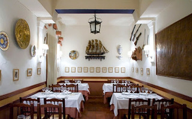
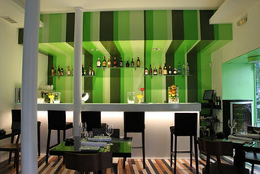
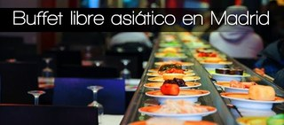
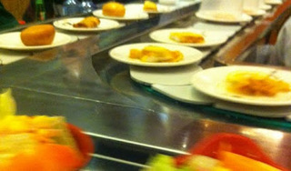
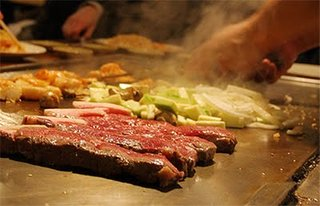
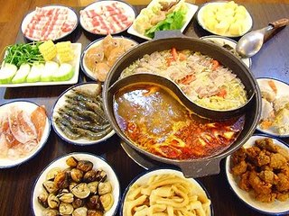
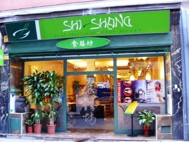

Fri, 26 Oct 2012 06:35:42 PDT
Bares de tapas y copas en Madrid
Bares de tapas y copas en Madrid
¿Quien no ha quedado con sus amigos, para tomarse unas ricas tapas por Madrid y acabar la noche disfrutando de unas copas? Pues bien en este post, os queremos recomendar algunos sitios donde sin tener que cambiar de local puedes hacer ambas cosas, es decir bares de tapas y copas en Madrid.
El primero es el bar La Berenjena (C/ de Marqués de Toca 7; 914 67 52 97; Calidad/Precio: 8/10). Reformado recientemente y con nuevas dueñas, estas le han dado un toque, digamos "vintage" decorando sus paredes con carteles publicitarios de principios del Siglo XX. El local únicamente tiene 2 pequeñas mesas, así que la mayor parte de la clientela se reparte a lo largo de las 2 barras, con las que cuenta el local. El bar ofrece tapas originales entre las que vamos a destacar las originales "samosas de morcilla, brie y cebolla", las sabrosas "minihamburguesas", los clásicos "mejillones trigre", las exóticas "gyozas japonesas" o sus "berenjenas en salsa de miso". La calidad de los productos y su presentación es muy buena por lo que no resulta especialmente barato, pero merece la pena. Para beber tienen una amplia selección de copas, con las ginebras y tónicas a la cabeza, muy buenos también sus cocteles como el mojito.El segundo es el bar Delic (Costanilla de San Andrés 14; 913 64 54 50; Calidad/Precio 7,5/10). Este original bar, con una cuidada y acogedora decoración, que recuerda a una antigua tienda de ultramarinos, te permite disfrutar de originales platos de varias partes del mundo en un ambiente relajado (menos los fines de semana que se llena hasta arriba). Entre su amplia carta os recomendamos el "bocadillito de mousse de pato con mermelada de mora", el "hummus", las "papas arrugadas con mojo picón" o los "dumplins japoneses". Mención especial merecen sus postres y tartas y por encima de todas la "tarta de zanahoria". En cuanto a las copas hay que resaltar sus ricos cocteles como las caipirinhas y sus famosos mojitos. De nuevo la calidad de los productos que ofrecen hay que pagarlos, por lo que no es especialmente económico, pero no defrauda. Como detalle decir, que con el buen tiempo sacan una terraza en la Plaza de la Paja muy agradable.
Esperamos que os gusten las propuestas y que las disfruteis.Feed de Tapapedia
¿Quien no ha quedado con sus amigos, para tomarse unas ricas
tapas por Madrid y acabar la noche disfrutando de unas
copas? Pues bien en este post, os queremos recomendar algunos sitios donde sin tener que cambiar de local puedes hacer ambas cosas, es decir
bares de tapas y copas en Madrid.
El primero es el bar
La Berenjena (C/ de Marqués de Toca 7; 914 67 52 97; Calidad/Precio: 8/10). Reformado recientemente y con nuevas dueñas, estas le han dado un toque, digamos "vintage" decorando sus paredes con carteles publicitarios de principios del Siglo XX. El local únicamente tiene 2 pequeñas mesas, así que la mayor parte de la clientela se reparte a lo largo de las 2 barras, con las que cuenta el local. El bar ofrece
tapas originales entre las que vamos a destacar las originales "
samosas de morcilla, brie y cebolla", las sabrosas "
minihamburguesas", los clásicos "
mejillones trigre", las exóticas "
gyozas japonesas" o sus "
berenjenas en salsa de miso". La calidad de los productos y su presentación es muy buena por lo que no resulta especialmente barato, pero merece la pena. Para beber tienen una amplia selección de
copas, con las ginebras y tónicas a la cabeza, muy buenos también sus cocteles como el mojito.
El segundo es el bar
Delic (Costanilla de San Andrés 14; 913 64 54 50; Calidad/Precio 7,5/10). Este original bar, con una cuidada y acogedora decoración, que recuerda a una antigua tienda de ultramarinos, te permite disfrutar de originales platos de varias partes del mundo en un ambiente relajado (menos los fines de semana que se llena hasta arriba). Entre su amplia carta os recomendamos el "
bocadillito de mousse de pato con mermelada de mora", el "
hummus", las "
papas arrugadas con mojo picón" o los "
dumplins japoneses". Mención especial merecen sus postres y tartas y por encima de todas la "
tarta de zanahoria". En cuanto a las
copas hay que resaltar sus ricos cocteles como las caipirinhas y sus famosos mojitos. De nuevo la calidad de los productos que ofrecen hay que pagarlos, por lo que no es especialmente económico, pero no defrauda. Como detalle decir, que con el buen tiempo sacan una terraza en la Plaza de la Paja muy agradable.
Esperamos que os gusten las propuestas y que las disfruteis.
Thu, 09 Aug 2012 14:51:57 PDT
La mejor paella de Madrid
La mejor paella de Madrid
Existen pocos platos más representativos de la gastronomía española, que la paella. Este plato, originario de Valencia, buscado con entusiasmo por los turistas que nos visitan, es también uno de nuestros platos preferidos especialmente para los días festivos. Como no podía ser de otra forma, dada su popularidad, existen innumerables restaurantes donde poder degustar este plato, pero como solemos hacer en este blog, les queremos proponer las que para nosotros son las mejores paellas de Madrid.
La primera recomendación es el restaurante La barraca (Calle de la Reina 29; 915 32 71 54; Calidad/Precio: 8/10) Ubicado muy próximo a la Gran Vía, este restaurante que abrió sus puertas en 1935, te permite elegir entre alguna de las doce formas que tienen de preparar el arroz. Las raciones de arroz son muy generosas pero si quieres pedir un entrante te recomendamos los "buñuelos de bacalao". En general cualquier arroz está muy sabroso, pero si tuviéramos que recomendar alguno serían el "arroz negro con sepia" acompañado de salsa ali-oli, la "paella marinera de la casa" con calamares, langostinos, mejillones, almejas, carabineros y mero, o el "arroz al horno". El precio de las paellas ronda los 15€ por persona. Al ser una parada habitual de los turista se recomienda reservar, sobre todo los fines de semana.
La segunda recomendación es el Restaurante Samm (Calle de Carlos Caamaño 3; 913 45 30 74; Calidad/Precio:) Para muchos este bullicioso restaurante, tiene la mejor paella de Madrid. Para elaborar sus arroces utilizan el arroz valenciano Bahía (menos extendido que el Bomba, pero muy bueno) y lo preparan como manda los cánones, en una fina capa de arroz. Como entrantes recomendamos "la ensaladilla rusa" o los "calamares a la plancha con ali-oli". Entre sus arroces nos quedamos con el famoso "arroz del senyoret" con sepia, emperador y rape, o el "arroz de la abuela" con garbanzos, chorizo, carne, morcilla y terminado de cocinar en el horno. Eso si, en esta ocasión el precio de los arroces se dispara un poco y suelen estar entorno a los 23€ por persona. De nuevo, es necesario reservar para poder conseguir una mesa, sobre todo los domingos. Disponen de terraza.
Feed de Tapapedia
Existen pocos platos más representativos de la gastronomía española, que la paella. Este plato, originario de Valencia, buscado con entusiasmo por los turistas que nos visitan, es también uno de nuestros platos preferidos especialmente para los días festivos. Como no podía ser de otra forma, dada su popularidad, existen innumerables restaurantes donde poder degustar este plato, pero como solemos hacer en este blog, les queremos proponer las que para nosotros son las mejores paellas de Madrid.

La primera recomendación es el restaurante La barraca (Calle de la Reina 29; 915 32 71 54; Calidad/Precio: 8/10) Ubicado muy próximo a la Gran Vía, este restaurante que abrió sus puertas en 1935, te permite elegir entre alguna de las doce formas que tienen de preparar el arroz. Las raciones de arroz son muy generosas pero si quieres pedir un entrante te recomendamos los "buñuelos de bacalao". En general cualquier arroz está muy sabroso, pero si tuviéramos que recomendar alguno serían el "arroz negro con sepia" acompañado de salsa ali-oli, la "paella marinera de la casa" con calamares, langostinos, mejillones, almejas, carabineros y mero, o el "arroz al horno". El precio de las paellas ronda los 15€ por persona. Al ser una parada habitual de los turista se recomienda reservar, sobre todo los fines de semana.
La segunda recomendación es el Restaurante Samm (Calle de Carlos Caamaño 3; 913 45 30 74; Calidad/Precio:) Para muchos este bullicioso restaurante, tiene la mejor paella de Madrid. Para elaborar sus arroces utilizan el arroz valenciano Bahía (menos extendido que el Bomba, pero muy bueno) y lo preparan como manda los cánones, en una fina capa de arroz. Como entrantes recomendamos "la ensaladilla rusa" o los "calamares a la plancha con ali-oli". Entre sus arroces nos quedamos con el famoso "arroz del senyoret" con sepia, emperador y rape, o el "arroz de la abuela" con garbanzos, chorizo, carne, morcilla y terminado de cocinar en el horno. Eso si, en esta ocasión el precio de los arroces se dispara un poco y suelen estar entorno a los 23€ por persona. De nuevo, es necesario reservar para poder conseguir una mesa, sobre todo los domingos. Disponen de terraza.
Mon, 18 Jun 2012 02:24:32 PDT
Restaurante Japones Barato en Madrid
Restaurante Japones Barato en Madrid
Una de las opciones preferidas en Madrid, cuando quieres probar una cocina exótica son los restaurantes japoneses, como demuestra que haya más de 100 restaurantes japoneses en la ciudad de Madrid. Entre tanta oferta a veces es difícil decidirse por uno. Nosotros te proponemos ayudarte, desde una premisa, elegir aquellos con la mejor relación calidad/precio.
El primero es el restaurante Maru Sushi Bar (C/ Calle de San Antonio 6; Tfno: 915 98 78 87; calidad/precio 8,5/10). Ubicado en el barrio de Tetuan, este pequeño restaurante japo-coreano, (dispone sólo de unas 5 mesas), resulta a primera vista un tanto chocante ya que todavía conserva la antigua decoración del anterior negocio, una taberna andaluza. Esta pequeña contradicción queda rápidamente en un segundo plano, al probar las ricas y baratas maravillas que disponen en su carta. Uno de sus puntos fuertes es su fresca materia prima, que traen del próximo Mercado de Maravillas y del de Chamartín, otra es que las raciones suelen ser bastante generosas (algo que se agradece sobre todo en el sushi). Entre todo los platos nosotros os recomendamos las empanadillas "gyoza", los fideos "yakisoba" , la ternera "bulgoki" y cualquier variedad de sushi como los "nigiri sushi de salmon" o el "california roll". Tienen servicio de take-away, que dado su pequeño tamaño puede ser una opción a considerar. Por poco más de 15€ por persona se puede comer perfectamente en este pequeña y escondida joya. Por cierto el camarero muy simpatico y atento.
El segundo es el restaurante Yamate (C/ del Padre Jesús Ordóñez 12; Tfno: 915 63 09 78; calidad/precio: 7/10). La principal singularidad y atractivo de este restaurante japones, cercano a Avenida de América, es que dispone de unos tatami privados (de 2 a 4 personas) separados por puertas corredizas, para poder comer a la manera más tradicional japonesa, de una forma íntima (ideal para parejas o comidas de trabajo). También dispone de un comedor "normal" y una pequeña barra. Dentro de su variada carta japonesa de nuevo recomendares unos muy buenos fideos "yakisoba" y dentro del sushi el "unagui de anguila" y el "nigui toro" (atún picado con cebolletas). Disponen de cerveza Sapporo (aunque en su versión europea). Por unos 20€ se puede comer perfectamente en este original y barato restaurante japones.
Espero que os gusten las nuevas recomendaciones.
Feed de Tapapedia
Una de las opciones preferidas en Madrid, cuando quieres probar una cocina exótica son los restaurantes japoneses, como demuestra que haya más de 100 restaurantes japoneses en la ciudad de Madrid. Entre tanta oferta a veces es difícil decidirse por uno. Nosotros te proponemos ayudarte, desde una premisa, elegir aquellos con la mejor relación calidad/precio.
El primero es el restaurante Maru Sushi Bar (C/ Calle de San Antonio 6; Tfno: 915 98 78 87; calidad/precio 8,5/10). Ubicado en el barrio de Tetuan, este pequeño restaurante japo-coreano, (dispone sólo de unas 5 mesas), resulta a primera vista un tanto chocante ya que todavía conserva la antigua decoración del anterior negocio, una taberna andaluza. Esta pequeña contradicción queda rápidamente en un segundo plano, al probar las ricas y baratas maravillas que disponen en su carta. Uno de sus puntos fuertes es su fresca materia prima, que traen del próximo Mercado de Maravillas y del de Chamartín, otra es que las raciones suelen ser bastante generosas (algo que se agradece sobre todo en el sushi). Entre todo los platos nosotros os recomendamos las empanadillas "gyoza", los fideos "yakisoba" , la ternera "bulgoki" y cualquier variedad de sushi como los "nigiri sushi de salmon" o el "california roll". Tienen servicio de take-away, que dado su pequeño tamaño puede ser una opción a considerar. Por poco más de 15€ por persona se puede comer perfectamente en este pequeña y escondida joya. Por cierto el camarero muy simpatico y atento.
El segundo es el restaurante Yamate (C/ del Padre Jesús Ordóñez 12; Tfno: 915 63 09 78; calidad/precio: 7/10). La principal singularidad y atractivo de este restaurante japones, cercano a Avenida de América, es que dispone de unos tatami privados (de 2 a 4 personas) separados por puertas corredizas, para poder comer a la manera más tradicional japonesa, de una forma íntima (ideal para parejas o comidas de trabajo). También dispone de un comedor "normal" y una pequeña barra. Dentro de su variada carta japonesa de nuevo recomendares unos muy buenos fideos "yakisoba" y dentro del sushi el "unagui de anguila" y el "nigui toro" (atún picado con cebolletas). Disponen de cerveza Sapporo (aunque en su versión europea). Por unos 20€ se puede comer perfectamente en este original y barato restaurante japones.
Espero que os gusten las nuevas recomendaciones.
Thu, 17 May 2012 01:24:24 PDT
Restaurantes vegetarianos baratos
Restaurantes vegetarianos baratos
Como ya hicimos en un anterior post sobre restaurantes vegetarianos en Madrid, en esta nueva ocasión os queremos recomendar algunos de los mejores restaurantes vegetarianos que tenemos en la ciudad y que además de poder comer de una forma rica y sana también son saludables para nuestro bolsillo.
El primer restaurante vegetariano es Sopa (Calle de Nieremberg, 23; Tfno: 914 13 17 19; Calidad/Precio: 8/10) Lo primero que te sorprende y que ves cuando entras a Sopa, es una pequeña tienda de productos macrobióticos y de otros tipo de productos tan dispares como joyas, ropa o bicicletas.
El restaurante dispone de una barra y de 2 mesas-comedor para unas 20 personas. Disponen de un menú (sopa + plato principal + postre o café/infusión) por 10€, cualquier día de la semana y que puedes consultar cada día aquí. Especialmente recomendables los "pasteles de tomate y de puerros" y un riquísimo "falafel en pan de pita". Como postre muy buenas las "tartas de chocolate" y la "tarta de zanahoria".
El segundo es la taberna el Triángulo de las verduras (Calle Antillón, 1; Tfno: 648 79 77 68,: Calidad/Precio: 7,5/10) En esta curiosa y pequeña taberna cercana a la Casa de Campo de Madrid decorada al más puro estilo Lavapies (ecléctico y retro a la vez), puedes tomar desde unas cañas acompañadas por una rica tapa vegetariana, hasta una amplia variedad de raciones vegetarianas a muy buen precio, donde destacaríamos por ricas "las croquetas de zanahoria y almendra" la "tartaleta de setas" el "perrito casero de seitán" o la "hamburguesa casera de seitán". Para terminar recomendable la "tarta de zanahoria".
Buen ambiente, buena comida y buen precio, todo un plan.
Feed de Tapapedia
Como ya hicimos en un anterior post sobre restaurantes vegetarianos en Madrid, en esta nueva ocasión os queremos recomendar algunos de los mejores restaurantes vegetarianos que tenemos en la ciudad y que además de poder comer de una forma rica y sana también son saludables para nuestro bolsillo.
El primer restaurante vegetariano es Sopa (Calle de Nieremberg, 23; Tfno: 914 13 17 19; Calidad/Precio: 8/10) Lo primero que te sorprende y que ves cuando entras a Sopa, es una pequeña tienda de productos macrobióticos y de otros tipo de productos tan dispares como joyas, ropa o bicicletas.
El restaurante dispone de una barra y de 2 mesas-comedor para unas 20 personas. Disponen de un menú (sopa + plato principal + postre o café/infusión) por 10€, cualquier día de la semana y que puedes consultar cada día aquí. Especialmente recomendables los "pasteles de tomate y de puerros" y un riquísimo "falafel en pan de pita". Como postre muy buenas las "tartas de chocolate" y la "tarta de zanahoria".
El segundo es la taberna el Triángulo de las verduras (Calle Antillón, 1; Tfno: 648 79 77 68,: Calidad/Precio: 7,5/10) En esta curiosa y pequeña taberna cercana a la Casa de Campo de Madrid decorada al más puro estilo Lavapies (ecléctico y retro a la vez), puedes tomar desde unas cañas acompañadas por una rica tapa vegetariana, hasta una amplia variedad de raciones vegetarianas a muy buen precio, donde destacaríamos por ricas "las croquetas de zanahoria y almendra" la "tartaleta de setas" el "perrito casero de seitán" o la "hamburguesa casera de seitán". Para terminar recomendable la "tarta de zanahoria".
Buen ambiente, buena comida y buen precio, todo un plan.
Wed, 07 Mar 2012 02:36:10 PST
Las mejores pizzas de Madrid
Las mejores pizzas de Madrid
No es la primera vez que hablamos de restaurantes italianos en Madrid, en el blog, pero en esta ocasión nos vamos a centrar en uno de sus pilares gastronómicos, aquellos restaurantes que sirven las mejores pizzas de Madrid. Es increíble la gran variedad de pizzas que podemos encontrarnos, las cuales difieren entre ellas en la combinación de su base (la masa de la pizza), su contenido (los ingredientes que lo acompañan) y la forma de hornearla. A pesar de no ser una fácil cuestión nos gustaría recomendarte algún restaurante donde las preparan especialmente bien.
El primero es el restaurante Il Pizzaiolo (Calle de Hortaleza 84; Tfno: 91 318 29 64; Calidad/Precio:8,5/10) Este pequeño restaurante italiano regentado por italianos, se llena todos los fines de semana gracias a la fórmula mágica de buenas pizzas a unos precios aun mejores (en torno a los 10€). Sin duda las pizzas que salen de su horno de leña merecen la pena estar catalogadas como una de las mejores pizzas de Madrid. El restaurante ofrece todo tipo de platos de la cocina siciliana pero donde son realmente especialistas son en las pizzas. No es fácil decantarse por una en concreto pero a nosotros nos parecen especialmente ricas la "Bracio di ferro" con salsa de tomate, espinacas, mozzarella y gorgonzola y la "Primavera" con salsa de tomate, mozzarella, rúcula y jamón serrano. Para terminar no os perdáis su "tiramisu" casero.
El segundo es La Tagliatella (Avda. Felipe II, 17, C/ Barquillo, 8, C/ Caleruega, 50, General Perón, 40, C/ Juan Bravo, 35, C/ Capitán Haya, 53, C/ Alcalá 498, Centro Comercial Príncipe Pío, C/ O´Donnell, 8, Avda. de América, 31, C/ Orense, 11, C/ Atocha, 16, Avda. Alberto Alcocer, 7, C/ Príncipe de Vergara, 143, Paseo de la Castellana, 257, Avda. del Machupichu, 85; Calidad/Precio:7,5/10) Con más de 15 establecimientos en Madrid Capital, esta cadena de restaurantes italianos, a pesar de lo que pueda parecer realizan también unas de las mejores pizzas de la ciudad. La decoración de los locales suele ser bastante cuidada y acogedora y de nuevo a pesar de tener todo tipo de platos de la cocina italiana lo que más destacan son sus pizzas. A destacar una masa muy fina cocida en horno de leña y el tamaño gigante de todas sus pizzas (sólo tienen un tamaño) que pondrán a prueba nuestra voracidad . Entre su amplia carta nos gustan especialmente la "Caprina" tomate, mozzarella, rulo de cabra, jamón de pato y albahaca y la "Tomino" tomate, mozzarella, queso tomino, frutos secos y manzana caramelizada. El precio de nuevo muy económico por unos 12€ se puede comer perfectamente.Esperamos vuestros comentarios. Ciao!Feed de Tapapedia
No es la primera vez que hablamos de restaurantes italianos en Madrid, en el blog, pero en esta ocasión nos vamos a centrar en uno de sus pilares gastronómicos, aquellos restaurantes que sirven las mejores pizzas de Madrid. Es increíble la gran variedad de pizzas que podemos encontrarnos, las cuales difieren entre ellas en la combinación de su base (la masa de la pizza), su contenido (los ingredientes que lo acompañan) y la forma de hornearla. A pesar de no ser una fácil cuestión nos gustaría recomendarte algún restaurante donde las preparan especialmente bien.
El primero es el restaurante Il Pizzaiolo (Calle de Hortaleza 84; Tfno: 91 318 29 64; Calidad/Precio:8,5/10) Este pequeño restaurante italiano regentado por italianos, se llena todos los fines de semana gracias a la fórmula mágica de buenas pizzas a unos precios aun mejores (en torno a los 10€). Sin duda las pizzas que salen de su horno de leña merecen la pena estar catalogadas como una de las mejores pizzas de Madrid. El restaurante ofrece todo tipo de platos de la cocina siciliana pero donde son realmente especialistas son en las pizzas. No es fácil decantarse por una en concreto pero a nosotros nos parecen especialmente ricas la "Bracio di ferro" con salsa de tomate, espinacas, mozzarella y gorgonzola y la "Primavera" con salsa de tomate, mozzarella, rúcula y jamón serrano. Para terminar no os perdáis su "tiramisu" casero.
El segundo es La Tagliatella (Avda. Felipe II, 17, C/ Barquillo, 8, C/ Caleruega, 50, General Perón, 40, C/ Juan Bravo, 35, C/ Capitán Haya, 53, C/ Alcalá 498, Centro Comercial Príncipe Pío, C/ O´Donnell, 8, Avda. de América, 31, C/ Orense, 11, C/ Atocha, 16, Avda. Alberto Alcocer, 7, C/ Príncipe de Vergara, 143, Paseo de la Castellana, 257, Avda. del Machupichu, 85; Calidad/Precio:7,5/10) Con más de 15 establecimientos en Madrid Capital, esta cadena de restaurantes italianos, a pesar de lo que pueda parecer realizan también unas de las mejores pizzas de la ciudad. La decoración de los locales suele ser bastante cuidada y acogedora y de nuevo a pesar de tener todo tipo de platos de la cocina italiana lo que más destacan son sus pizzas. A destacar una masa muy fina cocida en horno de leña y el tamaño gigante de todas sus pizzas (sólo tienen un tamaño) que pondrán a prueba nuestra voracidad . Entre su amplia carta nos gustan especialmente la "Caprina" tomate, mozzarella, rulo de cabra, jamón de pato y albahaca y la "Tomino" tomate, mozzarella, queso tomino, frutos secos y manzana caramelizada. El precio de nuevo muy económico por unos 12€ se puede comer perfectamente.
Esperamos vuestros comentarios. Ciao!
Sat, 11 Feb 2012 03:23:13 PST
Caña mas Tapa en Madrid
Caña mas Tapa en Madrid
Ya teníamos ganas de retomar uno de los temas más recurrentes de nuestro blog. Los bares de tapas en Madrid donde te ofrecen una tapa con cada caña. En esta ocasión os recomendamos 2 bares, que tienen que recomendártelos primero para entrar, porque lo último que te llamará la atención es su imagen. Bares de tapas con solera donde el boca a boca hace de publicidad y una rica y abundante tapa con cada bebida fideliza al cliente.El primero es el Restaurante Muñoz (Calle de Salamanca 28; tfno: 915 70 31 52; calidad/precio: 8/10). Situado en el barrio de Tetuan y bastante escondido, de decoración digamos austera y no muy espacioso. Todo estas "ventajas" se te olvidarán cuando empiecen a ponerte alguna de sus contundentes tapas. Especial mención a su riquísima tapa de "tortilla de patatas", pero también pueden caer pinchos de jamón, chorizo, salchichón, pimiento rellenos. Además si te quedas con hambre dejan en la barra una bandeja con algunos canapes, patatas y cortezas. También super recomendable si quieres ir a comer su "chuletón de Ávila" de 500gr, acompañada por una pulga de jamón y otra de queso, que quita el hipo...y el hambre también...El segundo es es Restaurante Mareas Vivas (Calle de Veneras 3; tfno:915 48 40 35; Calidad/Precio: 7/10) La localización de bar es mucho más céntrica (entre la plaza de Callao y Santo Domingo) Es uno de esos bares de tapas que el boca a boca lo hacen llenar cada fin de semana. El sitio es relativamente amplio con barra y mesas, por lo que si consigues un buen sitio disfrutarás más del tapeo. Entre las tapas que suelen sacar hay platos de paella, canapés de queso Philadelphia, salchichas, pimientos de piquillo con patatas y hasta garbanzos con carne. La caña a 1,50€ y de la marca Mahou. También recomendable para comer, y como buen gallego ofrecen buen marisco y un arroz con bogabante como plato estrella.Disfrutar de un buen tapeo. Saludos.Feed de Tapapedia
Ya teníamos ganas de retomar uno de los temas más recurrentes de nuestro blog. Los bares de tapas en Madrid donde te ofrecen una tapa con cada caña. En esta ocasión os recomendamos 2 bares, que tienen que recomendártelos primero para entrar, porque lo último que te llamará la atención es su imagen. Bares de tapas con solera donde el boca a boca hace de publicidad y una rica y abundante tapa con cada bebida fideliza al cliente.

El primero es el Restaurante Muñoz (Calle de Salamanca 28; tfno: 915 70 31 52; calidad/precio: 8/10). Situado en el barrio de Tetuan y bastante escondido, de decoración digamos austera y no muy espacioso. Todo estas "ventajas" se te olvidarán cuando empiecen a ponerte alguna de sus contundentes tapas. Especial mención a su riquísima tapa de "tortilla de patatas", pero también pueden caer pinchos de jamón, chorizo, salchichón, pimiento rellenos. Además si te quedas con hambre dejan en la barra una bandeja con algunos canapes, patatas y cortezas. También super recomendable si quieres ir a comer su "chuletón de Ávila" de 500gr, acompañada por una pulga de jamón y otra de queso, que quita el hipo...y el hambre también...

El segundo es es Restaurante Mareas Vivas (Calle de Veneras 3; tfno:915 48 40 35; Calidad/Precio: 7/10) La localización de bar es mucho más céntrica (entre la plaza de Callao y Santo Domingo) Es uno de esos bares de tapas que el boca a boca lo hacen llenar cada fin de semana. El sitio es relativamente amplio con barra y mesas, por lo que si consigues un buen sitio disfrutarás más del tapeo. Entre las tapas que suelen sacar hay platos de paella, canapés de queso Philadelphia, salchichas, pimientos de piquillo con patatas y hasta garbanzos con carne. La caña a 1,50€ y de la marca Mahou. También recomendable para comer, y como buen gallego ofrecen buen marisco y un arroz con bogabante como plato estrella.
Disfrutar de un buen tapeo. Saludos.
Wed, 28 Dec 2011 02:45:34 PST
Diner´s Americanos en Madrid
Diner´s Americanos en Madrid
En estos últimos años la cultura gastronómica americana se ha hecho fuerte en Madrid. Uno de sus mayores exponentes son los diner´s, que no son otra cosa, que los típicos restaurantes americanos de comida rápida que hemos vistos tantas veces en las películas; con sus ventanas transparentes y sillones acolchados.Uno de estos diner´s es el Tommy Mel's (Calle de Pedro Teixeira 8; 914 178 744 y Calle Hortaleza 34; Tfno: 91 521 23 58 Calidad/Precio: 7,5/10). Posiblemente es el dinner donde más conseguido está el tema de la decoración. No hacen reservas por lo que tendrás que apuntarte en una lista, y si está todo ocupado y quieres, tomarte algo en su barra mientras esperas. Las hamburguesas están bastante buenas (aunque no llega al nivel de las del Alfredo´s y no llevan patatas de acompañamiento). Os recomiendo la “Tommy Mel´s” (salsa Mel’s, lechuga, tomate, cebolla roja, pepinillos, queso cheddar, beicon crujiente y cebolla caramelizada) Para beber os recomiendo los "batidos naturales" de chocolate como los pediría George McFly. De postre tanto el "Tommy Mel´s brownie Sundae" (Helado de Vainilla, brownie, chocolate fundido y nata) como la tarta "Big Cheesecake" están muy buenas.Otro diner es Peggy Sue´s (C/ de Amaniel, 20 | C/ Eguilaz, 1 | C/ Menorca, 19 | C/ Belén,5 | C/ General Castaños, 1 (Getafe); Calidad/Precio: 7/10) Dispone de varios restaurantes repartidos por Madrid. Con locales más pequeños que los de Tommy Mel´s, también destacan estos restaurantes americanos por su decoración y por estar siempre hasta arriba. Dentro de las hamburguesas os recomiendo la "Peggy Sue´s" (cebolla a la plancha, y relish) y la “Mary Low” (cebolla a la plancha, queso azul y bacon). Las "alitas de pollo con salsa de miel y mostaza" también están muy conseguidas. Para beber curiosa la "pink lemonade". De postre el omnipresente "brownie".Ahora sólo hace falta ponerse a dieta para hacer un hueco a esta sabrosa incursión americana.
Feed de Tapapedia

En estos últimos años la cultura gastronómica americana se ha hecho fuerte en
Madrid. Uno de sus mayores exponentes son los
diner´s, que no son otra cosa, que los típicos
restaurantes americanos de comida rápida que hemos vistos tantas veces en las películas; con sus ventanas transparentes y sillones acolchados.
Uno de estos
diner´s es el
Tommy Mel's (Calle de Pedro Teixeira 8; 914 178 744 y Calle Hortaleza 34; Tfno: 91 521 23 58
Calidad/Precio: 7,5/10). Posiblemente es el dinner donde más conseguido está el tema de la decoración. No hacen reservas por lo que tendrás que apuntarte en una lista, y si está todo ocupado y quieres, tomarte algo en su barra mientras esperas. Las hamburguesas están bastante buenas (aunque no llega al nivel de las del Alfredo´s y no llevan patatas de acompañamiento). Os recomiendo la
“Tommy Mel´s” (salsa Mel’s, lechuga, tomate, cebolla roja, pepinillos, queso cheddar, beicon crujiente y cebolla caramelizada) Para beber os recomiendo los
"batidos naturales" de chocolate como los pediría George McFly. De postre tanto el
"Tommy Mel´s brownie Sundae" (Helado de Vainilla, brownie, chocolate fundido y nata) como la tarta
"Big Cheesecake" están muy buenas.

Otro
diner es
Peggy Sue´s (C/ de Amaniel, 20 | C/ Eguilaz, 1 | C/ Menorca, 19 | C/ Belén,5 | C/ General Castaños, 1 (Getafe);
Calidad/Precio: 7/10) Dispone de varios
restaurantes repartidos por
Madrid. Con locales más pequeños que los de Tommy Mel´s, también destacan estos
restaurantes americanos por su decoración y por estar siempre hasta arriba. Dentro de las hamburguesas os recomiendo la
"Peggy Sue´s" (cebolla a la plancha, y relish) y la
“Mary Low” (cebolla a la plancha, queso azul y bacon). Las
"alitas de pollo con salsa de miel y mostaza" también están muy conseguidas. Para beber curiosa la
"pink lemonade". De postre el omnipresente
"brownie".
Ahora sólo hace falta ponerse a dieta para hacer un hueco a esta sabrosa incursión americana.
Wed, 23 Nov 2011 07:04:01 PST
Restaurantes Peruanos en Madrid
Restaurantes Peruanos en Madrid
Posiblemente la cocina peruana es una de las mayores tendencias en la cocina moderna que tenemos hoy en día. Simplemente platos como el "ceviche" o cocteles como el "pisco sour" lo certifican. Es por eso que nos gustaría proponeros 2 restaurantes peruanos en Madrid donde podemos probar esta cocina sin tener que pedir un crédito personal.El primero es el restaurante Wakathai (Calle del Conde Duque 13; Tlfno: 915 41 78 76; Calidad/Precio: 8,5/10). Su cocina thai-peruana sorprende por sus exóticos sabores llenos de contrastes. Su carta está llena de ricos y poco comunes platos, por lo que para una primera ocasión es una buena idea pedir su menu degustación (30€) compuesto por una amplia representación de su carta: para comenzar dos aperitivos "gazpacho de melón" y una "ensalada de carne roja fría envuelta en papel de arroz". Siguen dos ricas ensaladas vietnamitas, la primera una "ensalada de oreja blanca marinada en salsa de ostras con gambas" y la otra "ensalada de casquería, a base de patas de pollo, callos de ternera y oreja de cerdo marinados", que merece la pena atreverse a probarla. Le sigue un "tiradito de corvina" (cruce del sashimi japonés y ceviche peruano) y su plato estrella el "ceviche de dorada" bastante picante. Después un "nem frito de cerdo y verduras envuelto en hoja de lechuga" (como un rollito primavera) y un "anticucho de conejo adobado con pan de pita" (pinchos de corazón de ternera marinada). Para concluir "carrillera tailandesa de ibérico y berenjena" . De postre "merengue aromatizado con lima y flan de coco con dulce de leche". En definitiva una rica apuesta exotica para gustos atrevidos.El segundo es el restaurante Tanta (Plaza del Perú 1; Tlfno: 913 50 26 26; Calidad/Precio:7,5/10) Este amplio local (150 comensales) de cocina peruana no admite reservas así que es un dato a tener en cuenta, sobre todo para cenar. Se trata de una versión low cost del carísimo Astrid & Gastón (es dueño es el mismo) conservando la base de la cocina pero a un precio más económico (puedes comer por unos 30€). Como entrante destaca la "causa limeña" con papa machacada y rellena de atún, huevo, mahonesa casera y aguacate (una especie de ensaladilla rusa), también destaca el "cebiche popular con leche de tigre" con menos cilantro de lo habitual en estos platos, el "tiradito al tamarindo de atun" y el "ají de gallina" (guiso de pollo de corral con ají amarillo). El pisco sour, rico pero aun precio exagerado (11€). Espero que os animeis a probar la cocina peruana y nos contéis la experiencia. Feed de Tapapedia
Posiblemente la cocina peruana es una de las mayores tendencias en la cocina moderna que tenemos hoy en día. Simplemente platos como el "ceviche" o cocteles como el "pisco sour" lo certifican. Es por eso que nos gustaría proponeros 2 restaurantes peruanos en Madrid donde podemos probar esta cocina sin tener que pedir un crédito personal.

El primero es el restaurante Wakathai (Calle del Conde Duque 13; Tlfno: 915 41 78 76; Calidad/Precio: 8,5/10). Su cocina thai-peruana sorprende por sus exóticos sabores llenos de contrastes. Su carta está llena de ricos y poco comunes platos, por lo que para una primera ocasión es una buena idea pedir su menu degustación (30€) compuesto por una amplia representación de su carta: para comenzar dos aperitivos "gazpacho de melón" y una "ensalada de carne roja fría envuelta en papel de arroz". Siguen dos ricas ensaladas vietnamitas, la primera una "ensalada de oreja blanca marinada en salsa de ostras con gambas" y la otra "ensalada de casquería, a base de patas de pollo, callos de ternera y oreja de cerdo marinados", que merece la pena atreverse a probarla. Le sigue un "tiradito de corvina" (cruce del sashimi japonés y ceviche peruano) y su plato estrella el "ceviche de dorada" bastante picante. Después un "nem frito de cerdo y verduras envuelto en hoja de lechuga" (como un rollito primavera) y un "anticucho de conejo adobado con pan de pita" (pinchos de corazón de ternera marinada). Para concluir "carrillera tailandesa de ibérico y berenjena" . De postre "merengue aromatizado con lima y flan de coco con dulce de leche". En definitiva una rica apuesta exotica para gustos atrevidos.

El segundo es el restaurante Tanta (Plaza del Perú 1; Tlfno: 913 50 26 26; Calidad/Precio:7,5/10) Este amplio local (150 comensales) de cocina peruana no admite reservas así que es un dato a tener en cuenta, sobre todo para cenar. Se trata de una versión low cost del carísimo Astrid & Gastón (es dueño es el mismo) conservando la base de la cocina pero a un precio más económico (puedes comer por unos 30€). Como entrante destaca la "causa limeña" con papa machacada y rellena de atún, huevo, mahonesa casera y aguacate (una especie de ensaladilla rusa), también destaca el "cebiche popular con leche de tigre" con menos cilantro de lo habitual en estos platos, el "tiradito al tamarindo de atun" y el "ají de gallina" (guiso de pollo de corral con ají amarillo). El pisco sour, rico pero aun precio exagerado (11€).
Espero que os animeis a probar la cocina peruana y nos contéis la experiencia.
Fri, 28 Oct 2011 07:33:49 PDT
Restaurantes Vegetarianos en Madrid
Restaurantes Vegetarianos en Madrid
Cada vez conozco a más personas que llevan una alimentación exclusivamente vegetariana. Será por esa mayor demanda, que han ido aparecido un buen número de sitios, donde vegetarianos y no vegetarianos, pueden probar este tipo de comida. De todos ellos, me gustaría mostraros algunos restaurantes vegetarianos en Madrid donde comer comida vegetariana sabrosa y además por un buen precio.El primero es el restaurante Hare Krishnas (Calle Espíritu Santo 19; Tfno:915 213 096; Calidad Precio: 7/10). Situado en el barrio de Malasaña, en el local de reunión de los Hare Krishnas en Madrid. Tiene varias peculiaridades, la primera es que para comer, lo primero que tienes que hacer es dar una donación (la gente suele dar sobre 5€) con la cual te darán un ticket. Con ese ticket te darán una bandeja (tipo "ejército" con hendiduras) donde te servirán un primero, un segundo y un postre (se puede repetir). Otra peculiaridad, es que se come descalzo y en el suelo (no tienen mesas). Lo cierto es que aparte de estas curiosidades, hay que decir que el local tiene un ambiente agradable y tranquilo, y la comida que sirven es casera y está muy rica.El segundo es el restaurante Vegaviana (Calle de Pelayo 35; Tfno: 913 080 381; Calidad/Precio: 8/10). Cercano a la plaza de Chueca, este local de decoración sencilla y libre de humos, ofrece una carta variada donde comer platos cotidianos, pero 100% vegetarianos. El sabor de sus platos es muy sabroso. Os recomiendo platos como las "croquetas de espinacas y zanahoria", los "raviolis de boletus con crema de tomate y romero" o las "berenjenas a la parmesana". La cantidad es correcta y a muy buen precio (unos 15€ por persona).En definitiva, dos opciones que os permitirán aproximaros a la comida vegetariana de una forma rica y barata.
Feed de Tapapedia

Cada vez conozco a más personas que llevan una alimentación exclusivamente vegetariana. Será por esa mayor demanda, que han ido aparecido un buen número de sitios, donde vegetarianos y no vegetarianos, pueden probar este tipo de comida. De todos ellos, me gustaría mostraros algunos restaurantes vegetarianos en Madrid donde comer comida vegetariana sabrosa y además por un buen precio.
El primero es el restaurante Hare Krishnas (Calle Espíritu Santo 19; Tfno:915 213 096; Calidad Precio: 7/10). Situado en el barrio de Malasaña, en el local de reunión de los Hare Krishnas en Madrid. Tiene varias peculiaridades, la primera es que para comer, lo primero que tienes que hacer es dar una donación (la gente suele dar sobre 5€) con la cual te darán un ticket. Con ese ticket te darán una bandeja (tipo "ejército" con hendiduras) donde te servirán un primero, un segundo y un postre (se puede repetir). Otra peculiaridad, es que se come descalzo y en el suelo (no tienen mesas). Lo cierto es que aparte de estas curiosidades, hay que decir que el local tiene un ambiente agradable y tranquilo, y la comida que sirven es casera y está muy rica.
 El segundo es el restaurante Vegaviana (Calle de Pelayo 35; Tfno: 913 080 381; Calidad/Precio: 8/10). Cercano a la plaza de Chueca, este local de decoración sencilla y libre de humos, ofrece una carta variada donde comer platos cotidianos, pero 100% vegetarianos. El sabor de sus platos es muy sabroso. Os recomiendo platos como las "croquetas de espinacas y zanahoria", los "raviolis de boletus con crema de tomate y romero" o las "berenjenas a la parmesana". La cantidad es correcta y a muy buen precio (unos 15€ por persona).
El segundo es el restaurante Vegaviana (Calle de Pelayo 35; Tfno: 913 080 381; Calidad/Precio: 8/10). Cercano a la plaza de Chueca, este local de decoración sencilla y libre de humos, ofrece una carta variada donde comer platos cotidianos, pero 100% vegetarianos. El sabor de sus platos es muy sabroso. Os recomiendo platos como las "croquetas de espinacas y zanahoria", los "raviolis de boletus con crema de tomate y romero" o las "berenjenas a la parmesana". La cantidad es correcta y a muy buen precio (unos 15€ por persona).
En definitiva, dos opciones que os permitirán aproximaros a la comida vegetariana de una forma rica y barata.
Fri, 30 Sep 2011 10:16:56 PDT
Tapas gratis con cada caña
Tapas gratis con cada caña
Ir de cañas es una de nuestras formas de ocio favorita y si además, con cada caña te ofrecen una buena tapa gratis, pues para que queremos más. En este artículo queremos descubrirte alguno de los bares con mejores tapas de Madrid.
El primero es el Bar Petisqueira (Calle Churruca 6; Calidad/Precio:7). Al entrar no parece más que una de tantas tascas de barrio decoradas en madera, pero guarda un rico secreto, sus tapas. Son tan abundantes que lo llaman el Tigre de Tribunal (por el Bar Tigre de Chueca) pero con 2 ventajas respecto a este, no está tan masificado y además tienen mesas donde poder sentarte a gusto. Las tapas son muy variadas: croquetas, patatas bravas, revuelto de morcilla, paella, alitas de pollo... pueden ir pasando por la barra mientras piden unas cañas (1,75€ cada una).
El segundo es el Bar La Esquina de Eusebio (Calle de Caramuel 16, Calidad/Precio:6,5). El bar regentando por un simpático portugués, y con decoración cañí portuguesa, es ya todo un clásico en la zona de Puerta del Angel. La razón no es otra que su barra libre de tapas, si como oís, Simplemente pídete una caña (2€ en vaso de sidra) y sírvete todas las tapas que quieras. Los camareros van constantemente sacando bandejas con tapas para que nunca falten e incluso te animan para que no te cortes y cojas todas las que quieras. Las tapas son bastante variadas: canapes de pate, sobrasada, jamón, ensaladilla, queso de untar, anchoas o menos habitualmente choricillos al horno, salchichas, empanadillas. El único fallo de bar es que tiene tanto éxito que los fines de semana es casi misión imposible encontrar un sitio.
Ya sabéis, a tapear gratis se a dicho!
Feed de Tapapedia

Ir de cañas es una de nuestras formas de ocio favorita y si además, con cada caña te ofrecen una buena tapa gratis, pues para que queremos más. En este artículo queremos descubrirte alguno de los bares con mejores tapas de Madrid.
El primero es el Bar Petisqueira (Calle Churruca 6; Calidad/Precio:7). Al entrar no parece más que una de tantas tascas de barrio decoradas en madera, pero guarda un rico secreto, sus tapas. Son tan abundantes que lo llaman el Tigre de Tribunal (por el Bar Tigre de Chueca) pero con 2 ventajas respecto a este, no está tan masificado y además tienen mesas donde poder sentarte a gusto. Las tapas son muy variadas: croquetas, patatas bravas, revuelto de morcilla, paella, alitas de pollo... pueden ir pasando por la barra mientras piden unas cañas (1,75€ cada una).

El segundo es el Bar La Esquina de Eusebio (Calle de Caramuel 16, Calidad/Precio:6,5). El bar regentando por un simpático portugués, y con decoración cañí portuguesa, es ya todo un clásico en la zona de Puerta del Angel. La razón no es otra que su barra libre de tapas, si como oís, Simplemente pídete una caña (2€ en vaso de sidra) y sírvete todas las tapas que quieras. Los camareros van constantemente sacando bandejas con tapas para que nunca falten e incluso te animan para que no te cortes y cojas todas las que quieras. Las tapas son bastante variadas: canapes de pate, sobrasada, jamón, ensaladilla, queso de untar, anchoas o menos habitualmente choricillos al horno, salchichas, empanadillas. El único fallo de bar es que tiene tanto éxito que los fines de semana es casi misión imposible encontrar un sitio.
Ya sabéis, a tapear gratis se a dicho!
Tue, 25 Sep 2012 02:07:50 PDT
Restaurante Romantico en Madrid
Restaurante Romantico en Madrid
Afortunadamente en Madrid, si queremos degustar en pareja de una buena comida y además disfrutar de un ambiente romántico y especial, hay varias propuestas gastronómicas que nos permiten hacerlo. Nos gustaría para este artículo escoger aquellos restaurantes románticos en Madrid, que destaquen tanto en el plato gastronómico como por su decoración, ambiente y originalidad.
El primero que hemos escogido es el Restaurante Kirei-Teatriz (Calle de la Hermosilla 15, 915 77 53 79, Calidad/Precio 8/10). Se trata de un antiguo teatro reconvertido a restaurante. Existe un bar de tapas a la entrada, la antigua sala de butacas es el comedor y el escenario es ahora una barra de sushi con varias mesas alrededor. La reforma se hizo con mucho gusto, por parte del conocido diseñador Philippe Starck. Recientemente han replanteado la carta y ahora tiene influencias de los maravillos restaurantes Kabuki y Sudestada. En el comedor se puede degustar de una cocina moderna con platos riquísimos como el "pulpo con trinchat de patata y curry rojo", el "arroz con idiazábal", las "anchoas a la brasa con fondo de escalibada" o un "steak tartar". En la barra de sushi destacan los "niguiri de huevo frito y pez mantequilla con trufa" el "usuzukuri al mojo verde" o el "curry japonés de hamburguesa de ibérico". Este restaurante romántico no es barato, comer te puede salir por unos 50€, lo bueno es que al ser del grupo VIPS puedes disfrutar de los 2X1 que la cadena habitualmente promociona.
La segunda propuesta es el Restaurante La Capilla de la Bolsa (Calle de la Bolsa 12, 915 21 86 23; Calidad/Precio 7,5/10) Se trata de un espectacular restaurante que previamente ha sido cosas tan variadas como; primera sede de la bolsa de Madrid, templo masónico y hasta incluso una iglesia. El restaurante romántico dispone de varias salas, pero la más atractiva es la principal con bóvedas en sus altos techos y una iluminación ténue a base de luces leds de colores, además cuenta con pianista y violinista que tocan en directo y le confieren al restaurante un toque más romántico si cabe. En cuanto a la carta es bastante elaborada con sabrosos platos como la "hamburguesa de avestruz con foie y frutos del bosque", el "atún rojo en salsa de pimientos verdes y crema de huevos fritos" o la "lasaña de bogavante con brunoise de verduritas en infusión de charantela". De nuevo se trata de un local donde se paga el ambiente y el buen servicio, comer puede rondar los 50€.
Espero que os gusten las propuestan y que encontreis un buen plan para vuestra cena romántica.
Feed de Tapapedia
Afortunadamente en Madrid, si queremos degustar en pareja de una buena comida y además disfrutar de un ambiente romántico y especial, hay varias propuestas gastronómicas que nos permiten hacerlo. Nos gustaría para este artículo escoger aquellos restaurantes románticos en Madrid, que destaquen tanto en el plato gastronómico como por su decoración, ambiente y originalidad.
El primero que hemos escogido es el Restaurante Kirei-Teatriz (Calle de la Hermosilla 15, 915 77 53 79, Calidad/Precio 8/10). Se trata de un antiguo teatro reconvertido a restaurante. Existe un bar de tapas a la entrada, la antigua sala de butacas es el comedor y el escenario es ahora una barra de sushi con varias mesas alrededor. La reforma se hizo con mucho gusto, por parte del conocido diseñador Philippe Starck. Recientemente han replanteado la carta y ahora tiene influencias de los maravillos restaurantes Kabuki y Sudestada. En el comedor se puede degustar de una cocina moderna con platos riquísimos como el "pulpo con trinchat de patata y curry rojo", el "arroz con idiazábal", las "anchoas a la brasa con fondo de escalibada" o un "steak tartar". En la barra de sushi destacan los "niguiri de huevo frito y pez mantequilla con trufa" el "usuzukuri al mojo verde" o el "curry japonés de hamburguesa de ibérico". Este restaurante romántico no es barato, comer te puede salir por unos 50€, lo bueno es que al ser del grupo VIPS puedes disfrutar de los 2X1 que la cadena habitualmente promociona.
La segunda propuesta es el Restaurante La Capilla de la Bolsa (Calle de la Bolsa 12, 915 21 86 23; Calidad/Precio 7,5/10) Se trata de un espectacular restaurante que previamente ha sido cosas tan variadas como; primera sede de la bolsa de Madrid, templo masónico y hasta incluso una iglesia. El restaurante romántico dispone de varias salas, pero la más atractiva es la principal con bóvedas en sus altos techos y una iluminación ténue a base de luces leds de colores, además cuenta con pianista y violinista que tocan en directo y le confieren al restaurante un toque más romántico si cabe. En cuanto a la carta es bastante elaborada con sabrosos platos como la "hamburguesa de avestruz con foie y frutos del bosque", el "atún rojo en salsa de pimientos verdes y crema de huevos fritos" o la "lasaña de bogavante con brunoise de verduritas en infusión de charantela". De nuevo se trata de un local donde se paga el ambiente y el buen servicio, comer puede rondar los 50€.
Espero que os gusten las propuestan y que encontreis un buen plan para vuestra cena romántica.
Mon, 23 Jul 2012 13:34:01 PDT
Restaurantes Modernos en Madrid
Restaurantes Modernos en Madrid
¿No os ha pasado de estar tentados de probar alguno de esos restaurantes modernos que hay en Madrid con sorprendentes y apetecibles platos en sus cartas, pero finalmente no has ido por miedo a acabar decepcionado y con una abundante factura en tu cuenta bancaria? En tapapedia nos hemos propuesto seleccionar algunos de esos restaurantes modernos que realmente disfrutes con sus platos y que a la vez no tengas que pedir un crédito para permitirte comer en ellos.
El primero es el restaurante La Cesta de Recoletos (Calle de Recoletos 10; +34 911 40 06 96; Calidad/Precio: 8,25/10) Ubicado en Recoletos, zona en donde en los últimos meses han abierto unos cuantos restaurantes recomendables, el restaurante decorado por el decorador de interiores Pascual Ortega, tiene una estética que la podríamos denominar neoyorkina, sin grandes estridencias pero moderna y agradable. El restaurante esta dirigido por los responsables de cocina de uno de los mejores restaurantes de Madrid, el Santceloni y han intentado llevar en buena parte su comida, pero tratando de rebajar en gran medida los precios. Dentro de la carta (la cual, en parte, van renovando) nos gustaría recomendar algunos platos como la "Crema fría de coliflor con la pintada escabechada", las "Vieiras a la sartén a la vinagreta de hierbas y avellanas", la "Butifarra catalana con puré de hinojo", el "Solomillo de buey en dados y piperrada de cebolla y pimiento verde" y de postre riquísima la "Tarta de queso especial de La Cesta". Comer es La Cesta suele rondar los 30€ por persona. La única pega que pondría al restaurante es que alguno de los platos es demasiado escaso para su precio.
El segundo es el restaurante Lamucca de Pez (Plaza de Carlos Cambronero 4; +34 915 21 00 00; Calidad/Precio: 7,5/10) Con un hermano gemelo en la Calle del Prado 16, el restaurante destaca desde el primer momento por su moderna decoración, con espacios amueblados con objetos vintage o recuperados los cuales en su mayoría se venden. El restaurante dispone también de una gran barra y mesas altas para picotear. La carta ofrece una gran diversidad de platos con un enfoque urbanita y un nivel medio bastante alto. Especialmente destacables sus pizzas en horno de leña como la "Pizza de boletus con esencia de trufa" y sus pescados como el "Tataki de atún al gengibre" y el "Ceviche de atún rojo" de postre muy rica la "tarta de manzana casera". Los precios en Lamucca son bastante comedidos, comer te suele salir entorno a los 20€ por persona. Recomendable reservar los fines de semana.
Feed de Tapapedia
¿No os ha pasado de estar tentados de probar alguno de esos restaurantes modernos que hay en Madrid con sorprendentes y apetecibles platos en sus cartas, pero finalmente no has ido por miedo a acabar decepcionado y con una abundante factura en tu cuenta bancaria? En tapapedia nos hemos propuesto seleccionar algunos de esos restaurantes modernos que realmente disfrutes con sus platos y que a la vez no tengas que pedir un crédito para permitirte comer en ellos.
El primero es el restaurante La Cesta de Recoletos (Calle de Recoletos 10; +34 911 40 06 96; Calidad/Precio: 8,25/10) Ubicado en Recoletos, zona en donde en los últimos meses han abierto unos cuantos restaurantes recomendables, el restaurante decorado por el decorador de interiores Pascual Ortega, tiene una estética que la podríamos denominar neoyorkina, sin grandes estridencias pero moderna y agradable. El restaurante esta dirigido por los responsables de cocina de uno de los mejores restaurantes de Madrid, el Santceloni y han intentado llevar en buena parte su comida, pero tratando de rebajar en gran medida los precios. Dentro de la carta (la cual, en parte, van renovando) nos gustaría recomendar algunos platos como la "Crema fría de coliflor con la pintada escabechada", las "Vieiras a la sartén a la vinagreta de hierbas y avellanas", la "Butifarra catalana con puré de hinojo", el "Solomillo de buey en dados y piperrada de cebolla y pimiento verde" y de postre riquísima la "Tarta de queso especial de La Cesta". Comer es La Cesta suele rondar los 30€ por persona. La única pega que pondría al restaurante es que alguno de los platos es demasiado escaso para su precio.
El segundo es el restaurante Lamucca de Pez (Plaza de Carlos Cambronero 4; +34 915 21 00 00; Calidad/Precio: 7,5/10) Con un hermano gemelo en la Calle del Prado 16, el restaurante destaca desde el primer momento por su moderna decoración, con espacios amueblados con objetos vintage o recuperados los cuales en su mayoría se venden. El restaurante dispone también de una gran barra y mesas altas para picotear. La carta ofrece una gran diversidad de platos con un enfoque urbanita y un nivel medio bastante alto. Especialmente destacables sus pizzas en horno de leña como la "Pizza de boletus con esencia de trufa" y sus pescados como el "Tataki de atún al gengibre" y el "Ceviche de atún rojo" de postre muy rica la "tarta de manzana casera". Los precios en Lamucca son bastante comedidos, comer te suele salir entorno a los 20€ por persona. Recomendable reservar los fines de semana.
Mon, 18 Jun 2012 02:15:27 PDT
restaurantes mexicanos en madrid
restaurantes mexicanos en madrid
No es la primera vez que hablamos en el blog, de algunos de los mejores restaurantes mexicanos en Madrid, pero es tanta la oferta y novedades que se presentan en la ciudad de Madrid que creíamos que se merecían un segundo post para poder tener una visión más amplia de algunos de los mejores lugares donde poder probar y disfrutar de la maravillosa gastronomía mexicana.
La primera recomendación es el Restaurante DF Bar (Calle de León 31; Tfno: 914 20 16 09; Calidad Precio: 8/10). Se trata de un pequeño restaurante (unas 6 mesas) ubicado en la zona de Huertas que se aleja de la típica carta de los restaurantes mexicanos, siendo su especialidad las tortas (bocadillos mexicanos). Todas las tortas vienen con queso fundido, tomate, aguacate, cebolla, mayonesa y frijoles fritos, nosotros recomendamos especialmente la torta "tesorito" con pierna de cordero y plátano macho y la "cantinera" con filete de ternera empanada, ambas por 5€. El restaurante está muy bien de precio, teniendo en cuenta además, que tienen un menú formado por una torta, caña o refresco y patatas DF desde 6,30€. También disponen de tacos, muy rico el de "cochinita pibil", nachos y tamales, también muy sabrosos. Para beber tienen una amplia variedad de cervezas mexicanas y también de grifo, esta de la marca "modelo especial". En definitiva comida auténtica a buen precio, todo un descubrimiento...
La siguiente recomendación es el Restaurante La Herradura (Calle Montserrat 32; Tfno: 915 42 39 36; Calidad/Precio: 7,5/10) El local, cercano a Conde Duque, falla un tanto en la ambientación, donde se nota que no se han gastado mucho en la reforma del anterior bar que lo habitaba, pero todo se olvida pronto con su gran y auténtica comida mexicana. De entrante se hace casi indispensable probar su excepcional "guacamole" de los mejores que hemos probado y también muy rico el "atún al chile". Los tacos también están muy logrados especialmente el "gringa" con carne de cerdo, queso y piña, el "bistec" de trocitos de carne de res a la plancha y las "carnitas" carne de cerdo frito en manteca de cerdo. Para acabar muy rico el plato de "tampiqueña" carne de res con salsa de guacamole y rodajas de cebolla. Si se prefiere disponen también de un menú degustación para 2 (28€ por persona, postres y bebidas incluidas) donde puedes probar uno de sus primeros, un taco, una enchilada y un postre. Por cierto no dejes de probar sus margaritas porque son un escándalo.
Feed de Tapapedia
No es la primera vez que hablamos en el blog, de algunos de los mejores restaurantes mexicanos en Madrid, pero es tanta la oferta y novedades que se presentan en la ciudad de Madrid que creíamos que se merecían un segundo post para poder tener una visión más amplia de algunos de los mejores lugares donde poder probar y disfrutar de la maravillosa gastronomía mexicana.
La primera recomendación es el
Restaurante DF Bar (Calle de León 31; Tfno: 914 20 16 09; Calidad Precio: 8/10). Se trata de un pequeño restaurante (unas 6 mesas) ubicado en la zona de Huertas que se aleja de la típica carta de los
restaurantes mexicanos, siendo su especialidad las tortas (bocadillos mexicanos). Todas las tortas vienen con queso fundido, tomate, aguacate, cebolla, mayonesa y frijoles fritos, nosotros recomendamos especialmente la torta
"tesorito" con pierna de cordero y plátano macho y la
"cantinera" con filete de ternera empanada, ambas por 5€. El restaurante está muy bien de precio, teniendo en cuenta además, que tienen un menú formado por una torta, caña o refresco y patatas DF desde 6,30€. También disponen de tacos, muy rico el de "
cochinita pibil", nachos y tamales, también muy sabrosos. Para beber tienen una amplia variedad de cervezas mexicanas y también de grifo, esta de la marca
"modelo especial". En definitiva comida auténtica a buen precio, todo un descubrimiento...
La siguiente recomendación es el
Restaurante La Herradura (Calle Montserrat 32; Tfno: 915 42 39 36; Calidad/Precio: 7,5/10) El local, cercano a Conde Duque, falla un tanto en la ambientación, donde se nota que no se han gastado mucho en la reforma del anterior bar que lo habitaba, pero todo se olvida pronto con su gran y auténtica comida mexicana. De entrante se hace casi indispensable probar su excepcional
"guacamole" de los mejores que hemos probado y también muy rico el
"atún al chile". Los tacos también están muy logrados especialmente el
"gringa" con carne de cerdo, queso y piña, el
"bistec" de trocitos de carne de res a la plancha y las
"carnitas" carne de cerdo frito en manteca de cerdo. Para acabar muy rico el plato de
"tampiqueña" carne de res con salsa de guacamole y rodajas de cebolla. Si se prefiere disponen también de un menú degustación para 2 (28€ por persona, postres y bebidas incluidas) donde puedes probar uno de sus primeros, un taco, una enchilada y un postre. Por cierto no dejes de probar sus margaritas porque son un escándalo.
Wed, 07 Mar 2012 15:32:11 PST
Buffet libre asiatico en Madrid
Buffet libre asiatico en Madrid
Continuando con anteriores recomendaciones de buffet libre en Madrid, nos gustaría en esta ocasión comentaros 2 interesantes buffets libres asiáticos, que han aparecido en los últimos meses en el centro de Madrid.
El primero es el restaurante Xake (C/Caballero de Gracia 2; Calidad Precio: 7/10) Se trata de un kaitensushi (barra giratoria de sushi) en versión buffet libre. Para que os hagáis una idea es como la barra giratoria del restaurante Pink Sushiman o de Oishii, pero con la diferencia de que en vez de costarte cada plato entre 2 y 5 euros, en este restaurante puedes coger todo lo que quieras por un precio fijo de 8,50€ (lunes a viernes al mediodía) y de 12,90€ (cenas, fin de semana y festivos) con una calidad bastante aceptable. El restaurante se divide en dos partes una parte comer a la carta con mesas más grandes y otra para el buffet libre. Por la barra giratoria van constantemente pasando platos como; gyozas, pinchos de gambas empanadas, cuencos de ramen, pinchos de pollo yakitori, rollitos de primavera, ensalada de algas, arroz 3 delicias, tallarines con verduras, diferentes platos de ternera, pollo y cerdo y por su puesto diferentes tipos de sushi (makisushi, uramaki, nigirisushi) el postre está incluido pero no las bebidas.
El segundo es el restaurante ¡Ke Wok! (C/ Silva 18; Tfno: 915 23 96 78; Calidad Precio: 7,5/10) En esta ocasión lo mejor de este buffet libre y por lo que destaca es por su sección de distintas carnes, pescados y verduras crudas, para cocinar al momento, en wok (con salsa de ostras, teriyaki, curry, thai o soja) o en teppanyaki (a la plancha con salsa de ajo y perejil) del que salen en ambos casos platos con un sabor delicioso. También disponen de una buena variedad de marisco (langostinos, almejas, navajas, calamares) y por supuesto de sushi (makisushi, nigirisushi y shashimi). Nos pareció también muy curioso y poco visto su horno de vapor del que salen una muy rica variedad de dim-sum. El postre también está incluido. El precio de este buffet libre es de 8,95€ entre semana y 12,95€ noches, fines de semana y festivos. En definitiva otra buena opción para darte un festín asiatico sin gastarte mucho dinero.
Esperando vuestros comentarios!PD: Gracias a colorsandia.es por su gran talante y tan gentil ayuda en el descubrimiento de estas joyas.Feed de Tapapedia

Continuando con anteriores recomendaciones de buffet libre en Madrid, nos gustaría en esta ocasión comentaros 2 interesantes buffets libres asiáticos, que han aparecido en los últimos meses en el centro de Madrid.
El primero es el restaurante Xake (C/Caballero de Gracia 2; Calidad Precio: 7/10) Se trata de un kaitensushi (barra giratoria de sushi) en versión buffet libre. Para que os hagáis una idea es como la barra
giratoria del restaurante Pink Sushiman o de Oishii, pero con la diferencia de que en vez de costarte cada plato entr
e 2 y 5 euros, en este restaurante puedes coger todo lo que quieras por un precio fijo de 8,50€ (lunes a viernes al mediodía) y de 12,90€ (cenas, fin de semana y festivos) con una calidad bastante aceptable. El restaurante se divide en dos partes una parte comer a la carta con mesas más grandes y otra para el buffet libre. Por la barra giratoria van constantemente pasando platos como; gyozas, pinchos de gambas empanadas, cuencos de ramen, pinchos de pollo yakitori, rollitos de primavera, ensalada de algas, arroz 3 delicias, tallarines con verduras, diferentes platos de ternera, pollo y cerdo y por su puesto diferentes tipos de sushi (makisushi, uramaki, nigirisushi) el postre está incluido pero no las bebidas.

El segundo es el restaurante ¡Ke Wok! (C/ Silva 18; Tfno: 915 23 96 78; Calidad Precio: 7,5/10) En esta ocasión lo mejor de este buffet libre y por lo que destaca es por su sección de distintas carnes, pescados y verduras crudas, para cocinar al momento, en wok (con salsa de ostras, teriyaki, curry, thai o soja) o en teppanyaki (a la plancha con salsa de ajo y perejil) del que salen en ambos casos platos con un sabor delicioso. También disponen de una buena variedad de marisco (langostinos, almejas, navajas, calamares) y por supuesto de sushi (makisushi, nigirisushi y shashimi). Nos pareció también muy curioso y poco visto su horno de vapor del que salen una muy rica variedad de dim-sum. El postre también está incluido. El precio de este buffet libre es de 8,95€ entre semana y 12,95€ noches, fines de semana y festivos. En definitiva otra buena opción para darte un festín asiatico sin gastarte mucho dinero.
Esperando vuestros comentarios!
PD: Gracias a colorsandia.es por su gran talante y tan gentil ayuda en el descubrimiento de estas joyas.
Sat, 03 Mar 2012 13:03:15 PST
Restaurantes Chinos en Madrid
Restaurantes Chinos en Madrid
Los restaurantes chinos en Madrid, siempre han sido uno de los pilares de este blog y por ello, uno de nuestros compromisos es ir añadiendo poco a poco, los mejores restaurantes chinos que vayamos conociendo o vayan apareciendo.El restaurante Don Loy (Paseo de Extremadura 30; Tfno: 914 634 546; Calidad/Precio: 7,5/10) es uno de esos chinos de chinos que no pueden clasificarse dentro de los 2 más típicos ejemplos de restaurantes chinos que hay en Madrid (los chinos cutres de los 90 y los fashions de este principio de siglo) si no como restaurante chinos de chinos. En este caso este restaurante chino está especializado en la comida cantonesa. El comedor, que ofrece una gran número de mesas, conserva en gran medida la decoración, que anteriormente ocupaba en este espacio un típico mesón de barrio. Dentro de lo más destacable de su cocina, son sus variedades de dim sum servidos en cestas de bambú; los "shao-mai"(pastel de cerdo y gambas) el "xia-jiao" (empanadilla de arroz y gambas al vapor) y los "cha-sao-shang" (canelones rellenos de carne asada al vapor). Muy ricos también sus "tallarines frescos con carne, verduras y setas", exquisita aunque menos económica la "langosta con puerro, jengibre y salsa de soja". El restaurante no es ni barato ni caro (unos 20€ por pax), no dejan pedir jarras de agua, pero merece la pena probarlo y descubrir los que dicen que son, los mejores dim sum de Madrid.El siguiente es el restaurante Fundue Si Chuang (C/ Divino Vallés 31; Tfno: 914 737 129; Calidad/Precio 8/10). La estrella aquí es el Hot Pot o founde china. Se trata de un olla con caldo, que se mantiene caliente a través de un pequeño fogón, y al que se le van añadiendo un gran número de ingredientes. El caldo se puede elegir picante (realmente picante), normal, o de los 2 tipos (la olla viene con un separador para no mezclar los caldos). Para comer, se piden diferentes acompañamientos crudos. Los hay de todo tipo: carnes, pescados, verduras, pastas... Los ingredientes se van añadiendo mezclados por tandas. Una vez cocidos se van sacando según el gusto de cada uno. De los que probé me gustaron muchos los "raviolis de huevo rellenos de carne", los "fideos chinos" las "setas shitake" y la "carne de ternera" (te la sirven congelada y cortada en finas lonchas). Como acompañamiento te ponen un cuenco con salsa especial de cacahuetes. El precio está genial (unos 10€ por pax) y me parece una opción rica y divertida de descubrir otro gran parte de la gastronomía china.
Esperamos vuestros comentarios!Feed de Tapapedia

Los restaurantes chinos en Madrid, siempre han sido uno de los pilares de este blog y por ello, uno de nuestros compromisos es ir añadiendo poco a poco, los mejores restaurantes chinos que vayamos conociendo o vayan apareciendo.
El restaurante Don Loy (Paseo de Extremadura 30; Tfno: 914 634 546; Calidad/Precio: 7,5/10) es uno de esos chinos de chinos que no pueden clasificarse dentro de los 2 más típicos ejemplos de restaurantes chinos que hay en Madrid (los chinos cutres de los 90 y los fashions de este principio de siglo) si no como restaurante chinos de chinos. En este caso este restaurante chino está especializado en la comida cantonesa. El comedor, que ofrece una gran número de mesas, conserva en gran medida la decoración, que anteriormente ocupaba en este espacio un típico mesón de barrio. Dentro de lo más destacable de su cocina, son sus variedades de dim sum servidos en cestas de bambú; los "shao-mai"(pastel de cerdo y gambas) el "xia-jiao" (empanadilla de arroz y gambas al vapor) y los "cha-sao-shang" (canelones rellenos de carne asada al vapor). Muy ricos también sus "tallarines frescos con carne, verduras y setas", exquisita aunque menos económica la "langosta con puerro, jengibre y salsa de soja". El restaurante no es ni barato ni caro (unos 20€ por pax), no dejan pedir jarras de agua, pero merece la pena probarlo y descubrir los que dicen que son, los mejores dim sum de Madrid.
El siguiente es el restaurante Fundue Si Chuang (C/ Divino Vallés 31; Tfno: 914 737 129; Calidad/Precio 8/10). La estrella aquí es el Hot Pot o founde china. Se trata de un olla con caldo, que se mantiene caliente a través de un pequeño fogón, y al que se le van añadiendo un gran número de ingredientes. El caldo se puede elegir picante (realmente picante), normal, o de los 2 tipos (la olla viene con un separador para no mezclar los caldos). Para comer, se piden diferentes acompañamientos crudos. Los hay de todo tipo: carnes, pescados, verduras, pastas... Los ingredientes se van añadiendo mezclados por tandas. Una vez cocidos se van sacando según el gusto de cada uno. De los que probé me gustaron muchos los "raviolis de huevo rellenos de carne", los "fideos chinos" las "setas shitake" y la "carne de ternera" (te la sirven congelada y cortada en finas lonchas). Como acompañamiento te ponen un cuenco con salsa especial de cacahuetes. El precio está genial (unos 10€ por pax) y me parece una opción rica y divertida de descubrir otro gran parte de la gastronomía china.
Esperamos vuestros comentarios!
Mon, 16 Jan 2012 04:00:44 PST
Chocolate con churros en Madrid
Chocolate con churros en Madrid
Cuando llega el invierno y el frío, pocas cosas pueden apetecer más que disfrutar, en buena compañía, de una rica taza de chocolate caliente y más si en ella podemos mojar un crujientes y sabrosos churros. Aunque son todo un clásico me gustaría presentaros los que para nosotros son las mejores chocolaterías con churros de Madrid.
La primera es la Chocolatería San Miguel (Plazuela del Conde de Miranda, 4; calidad/precio 8,5/10) Ubicada cerca de la Plaza Mayor en una de las zonas con más encanto de Madrid, resulta muy agradable perderse por sus calles y acabar en esta chocolatería que destaca por su mágico ambiente de bar como de otra época. El servicio es siempre muy atento, y permitirá disfrutar muy a gusto de la que para muchos es la mejor chocolatería con churros de Madrid.
La siguiente es la Chocolatería Valor (Calle Postigo de San Martín, 7; calidad/precio 8/10) La compañía Valor dispone de varios establecimientos por varias ciudades de España y en Madrid, pero por su ambiente, decoración y tradición, desde 1881, la chocolatería ubicada junto a la plaza de Callao es sin duda la mejor opción para disfrutar de un buen chocolate. Suele tener una gran afluencia de clientes, sobre todo en la época navideña por lo que si quieres ir en este periodo te recomendamos que lo hagas mejor por las mañanas.
Por último la Chocolatería San Gines (Pasadizo San Ginés, 5; calidad/precio 8,5/10) Es quizás la de mayor fama y posiblemente la más demandada por los turistas (hasta han abierto una sucursal en Tokyo). Desde 1884 sirven posiblemente el mejor chocolate con churros de Madrid. Dispone de una planta a pie de calle donde está la barra, una planta baja más tranquila pero donde están los baños y también de una terraza, con calefactores en invierno, en la Calle San Gines, una de las zonas con más encanto de todo Madrid.
A disfrutar chocolateros!PD: hasta el día 16 de febrero en las Cafeterías Nebraska regalan una ración de churros: http://on.fb.me/pkBX1R
Feed de Tapapedia
Cuando llega el invierno y el frío, pocas cosas pueden apetecer más que disfrutar, en buena compañía, de una rica taza de chocolate caliente y más si en ella podemos mojar un crujientes y sabrosos churros. Aunque son todo un clásico me gustaría presentaros los que para nosotros son las mejores chocolaterías con churros de Madrid.

La primera es la Chocolatería San Miguel (Plazuela del Conde de Miranda, 4; calidad/precio 8,5/10) Ubicada cerca de la Plaza Mayor en una de las zonas con más encanto de Madrid, resulta muy agradable perderse por sus calles y acabar en esta chocolatería que destaca por su mágico ambiente de bar como de otra época. El servicio es siempre muy atento, y permitirá disfrutar muy a gusto de la que para muchos es la mejor chocolatería con churros de Madrid.

La siguiente es la Chocolatería Valor (Calle Postigo de San Martín, 7; calidad/precio 8/10) La compañía Valor dispone de varios establecimientos por varias ciudades de España y en Madrid, pero por su ambiente, decoración y tradición, desde 1881, la chocolatería ubicada junto a la plaza de Callao es sin duda la mejor opción para disfrutar de un buen chocolate. Suele tener una gran afluencia de clientes, sobre todo en la época navideña por lo que si quieres ir en este periodo te recomendamos que lo hagas mejor por las mañanas.
Por último la Chocolatería San Gines (Pasadizo San Ginés, 5; calidad/precio 8,5/10) Es quizás la de mayor fama y posiblemente la más demandada por los turistas (hasta han abierto una sucursal en Tokyo). Desde 1884 sirven posiblemente el mejor chocolate con churros de Madrid. Dispone de una planta a pie de calle donde está la barra, una planta baja más tranquila pero donde están los baños y también de una terraza, con calefactores en invierno, en la Calle San Gines, una de las zonas con más encanto de todo Madrid.
A disfrutar chocolateros!
PD: hasta el día 16 de febrero en las Cafeterías Nebraska regalan una ración de churros: http://on.fb.me/pkBX1R
Wed, 28 Dec 2011 02:42:54 PST
Las 3 Mejores hamburguesas de Madrid
Las 3 Mejores hamburguesas de Madrid
Las hamburguesas han estado durante años asociadas a comida rápida, de no muy buena calidad, pero últimamente están experimentado toda una revolución en Madrid. Han aparecido un buen número de establecimientos donde apuestan por la calidad de las materias primas en vez de por el precio y eso se nota en su sabor. Os recomendamos en esta ocasión algunos de los sitios donde ofrecen las mejores hamburguesas de Madrid.
El primero es New York Burguer (C/ General Yagüe, 5; Tfno: 91 770 30 79 y Calle Recoletos, 4; Tfno: 91 431 84 17; Calidad/Precio:8,5) Se trata de una de las sensaciones de Madrid. El local de 2 plantas no da a basto para servir a toda la gente que quiere probar una de sus 18 hamburguesas (los fines de semana es imposible conseguir mesa sin reserva). El secreto de sus deliciosas hamburguesas está en un buena carne (picada y aderezada por ellos mismos) y asarla en un horno de carbón que le da un toque ahumado buenísimo y queda más sabrosa que hecha a la parilla. Podemos pedirla de 4 tamaños: 160gr (7,90€), 250gr (9,90€), 350gr (11,90€) y una especial aniversario de 500gr (14,90). El pan puede ser el tradicional o uno rústico con semillas de amapolas (rico y más consistente). Elegir entre todas las hamburguesas no es fácil, nosotros recomendaríamos la Chrysler Tower (queso azul, salsa de arándanos, tomate, lechuga y cebolla la brasa), la Brooklyn (queso filadelphia, bacon crujiente y cebolla caramelizada), o la Times Square (queso de cabra, miel y frutos seco). Probablemente a día de hoy las mejores hamburguesas de Madrid.
El siguiente es Home Burguer Bar (C/ Espíritu Santo, 12; 91 522 97028 | C/ San Marcos, 26; 91 521 85 31 | C/Silva, 25; 91 115 12 79; Calidad/Precio: 8) Cuenta con 3 locales en Madrid (el de la calle Silva es el único que no admite reservas) que también suelen estar abarrotados (los fines de semana indispensable reserva). De nuevo, estas hamburguesas destacan por la calidad de su carne (Carne de Ávila, 100% ecológica) y por su variedad. De las 11 hamburguesas que nos ofrecen nos gustaría destacar la Caprese (tomates secos caseros, rúcula y queso parmesano) la Especial Home (queso filadelfia, nueces y cebolla a la parrilla) o la Blue Burguer (queso roquefort, peras caramelizadas y nueces). De postre la tarta de queso también es muy recomendable. El precio de las hamburguesas es algo más caro, desde 10€ hasta unos 14€ la más cara. En cualquier caso merece la pena probarlas.El último es TM Burguer (C/ Espiritu Santo, 3; Calidad/Precio 7,5). Este pequeño establecimiento del barrio de Malasaña inaugurado hace menos de un año, no llega a la calidad de los 2 primeros pero tiene 2 bazas a su favor. Un local, sencillo pero con una decoración años 50 muy chula, y el precio de sus hamburguesas, 3€ la sencilla y 4,50€ la doble, después cada ingrediente extra 0,50€ (bacon, chedar, cebolla a la parrilla, cebolla crujiente,..) El sabor de sus hamburguesas también es muy rico y por ese precio creo que no tiene rival en Madrid. Por cierto los fines de semana abren hasta las 02:30.
Esperamos que os gusten las hamburguesas!Feed de Tapapedia

Las hamburguesas han estado durante años asociadas a comida rápida, de no muy buena calidad, pero últimamente están experimentado toda una revolución en Madrid. Han aparecido un buen número de establecimientos donde apuestan por la calidad de las materias primas en vez de por el precio y eso se nota en su sabor. Os recomendamos en esta ocasión algunos de los sitios donde ofrecen las mejores hamburguesas de Madrid.

El primero es New York Burguer (C/ General Yagüe, 5; Tfno: 91 770 30 79 y Calle Recoletos, 4; Tfno: 91 431 84 17; Calidad/Precio:8,5) Se trata de una de las sensaciones de Madrid. El local de 2 plantas no da a basto para servir a toda la gente que quiere probar una de sus 18 hamburguesas (los fines de semana es imposible conseguir mesa sin reserva). El secreto de sus deliciosas hamburguesas está en un buena carne (picada y aderezada por ellos mismos) y asarla en un horno de carbón que le da un toque ahumado buenísimo y queda más sabrosa que hecha a la parilla. Podemos pedirla de 4 tamaños: 160gr (7,90€), 250gr (9,90€), 350gr (11,90€) y una especial aniversario de 500gr (14,90). El pan puede ser el tradicional o uno rústico con semillas de amapolas (rico y más consistente). Elegir entre todas las hamburguesas no es fácil, nosotros recomendaríamos la Chrysler Tower (queso azul, salsa de arándanos, tomate, lechuga y cebolla la brasa), la Brooklyn (queso filadelphia, bacon crujiente y cebolla caramelizada), o la Times Square (queso de cabra, miel y frutos seco). Probablemente a día de hoy las mejores hamburguesas de Madrid.

El siguiente es Home Burguer Bar (C/ Espíritu Santo, 12; 91 522 97028 | C/ San Marcos, 26; 91 521 85 31 | C/Silva, 25; 91 115 12 79; Calidad/Precio: 8) Cuenta con 3 locales en Madrid (el de la calle Silva es el único que no admite reservas) que también suelen estar abarrotados (los fines de semana indispensable reserva). De nuevo, estas hamburguesas destacan por la calidad de su carne (Carne de Ávila, 100% ecológica) y por su variedad. De las 11 hamburguesas que nos ofrecen nos gustaría destacar la Caprese (tomates secos caseros, rúcula y queso parmesano) la Especial Home (queso filadelfia, nueces y cebolla a la parrilla) o la Blue Burguer (queso roquefort, peras caramelizadas y nueces). De postre la tarta de queso también es muy recomendable. El precio de las hamburguesas es algo más caro, desde 10€ hasta unos 14€ la más cara. En cualquier caso merece la pena probarlas.

El último es TM Burguer (C/ Espiritu Santo, 3; Calidad/Precio 7,5). Este pequeño establecimiento del barrio de Malasaña inaugurado hace menos de un año, no llega a la calidad de los 2 primeros pero tiene 2 bazas a su favor. Un local, sencillo pero con una decoración años 50 muy chula, y el precio de sus hamburguesas, 3€ la sencilla y 4,50€ la doble, después cada ingrediente extra 0,50€ (bacon, chedar, cebolla a la parrilla, cebolla crujiente,..) El sabor de sus hamburguesas también es muy rico y por ese precio creo que no tiene rival en Madrid. Por cierto los fines de semana abren hasta las 02:30.
Esperamos que os gusten las hamburguesas!
Sat, 29 Oct 2011 11:31:18 PDT
Buffets libres vegetarianos en Madrid
Buffets libres vegetarianos en Madrid
Hace algún tiempo ya hablamos de algunos de los mejores buffets libres de Madrid. En esta ocasión nos gustaría proponeos algunos buffets libres vegetarianos de Madrid.El primero de ellos es el restaurante Shi Shang (Calle de Concepción Arenal 3; Tlfno: 915 23 12 20; Calidad/Precio:7). Situado en las proximidades de la plaza de Callao este amplio restaurante de comida china, con más de 10 años de antigüedad, permite comer una buena comida vegetariana, ya sea en modalidad de buffet libre (8,95€) o tipo menú (desde 4.50€ bebida y postre incluido). Entre todos los platos que nos ofrecen, de lo mejor son los platos de carne que no son realmente carne (son preparados de tofu o seitán) como el "pollo al limón" o la "ternera con bambu y setas", simplemente por lo sorprendente que resulta el sabor de estos platos merece la pena conocer el restaurante, también son muy ricas sus "empanadillas al vapor" y los "rollitos de primavera". El restaurante también cuenta con sevicio de take-away.El segundo es el restaurante Viva la Vida (Costanilla de San Andrés 16; Tlfno: 913 66 33 49 y Calle de las Huertas 57; Tlfno: 913 69 72 54; Calidad/Precio: 7,5/10). La originalidad de este restaurante de buffet libre es que no pagas un precio fijo, si no por el peso que cojas (100 gr = 2,10€) El local de huertas es pequeñito y está pensado principalmente para llevarte la comida a casa (sólo tienen una pequeña barra dentro del local y es mitad restaurante mitad supermercado orgánico), en cambio el local La Latina es más grande y destaca tanto su agradable terraza (cuando acompaña el tiempo) como la planta baja del local con una decoración original, alegre y colorista. La comida es muy rica y variada con platos como: el "cous-cous", "quiches" varios tipos de "croquetas", "ensaladas", piezas de "sushi", "rollitos vietnamitas" y postres tan apetecibles como la "tarta de zanahorias" o la "tarta de chocolate y nueces".Espero que os gusten nuestras propuestas y esperamos vuestros comentarios.Feed de Tapapedia

Hace algún tiempo ya hablamos de algunos de los mejores buffets libres de Madrid
. En esta ocasión nos gustaría proponeos algunos buffets libres vegetarianos de Madrid.
El primero de ellos es el
restaurante Shi Shang (Calle de Concepción Arenal 3; Tlfno: 915 23 12 20;
Calidad/Precio:7). Situado en las proximidades de la plaza de Callao este amplio
restaurante de comida china, con más de 10 años de antigüedad, permite comer una buena comida vegetariana, ya sea en modalidad de
buffet libre (8,95€) o tipo menú (desde 4.50€ bebida y postre incluido). Entre todos los platos que nos ofrecen, de lo mejor son los platos de carne que no son realmente carne (son preparados de tofu o seitán) como el "
pollo al limón" o la "
ternera con bambu y setas", simplemente por lo sorprendente que resulta el sabor de estos platos merece la pena conocer el
restaurante, también son muy ricas sus "
empanadillas al vapor" y los "
rollitos de primavera". El
restaurante también cuenta con sevicio de take-away.

El segundo es el
restaurante Viva la Vida (Costanilla de San Andrés 16; Tlfno: 913 66 33 49 y Calle de las Huertas 57; Tlfno: 913 69 72 54;
Calidad/Precio: 7,5/10). La originalidad de este
restaurante de
buffet libre es que no pagas un precio fijo, si no por el peso que cojas (100 gr = 2,10€) El local de huertas es pequeñito y está pensado principalmente para llevarte la comida a casa (sólo tienen una pequeña barra dentro del local y es mitad restaurante mitad supermercado orgánico), en cambio el local La Latina es más grande y destaca tanto su agradable terraza (cuando acompaña el tiempo) como la planta baja del local con una decoración original, alegre y colorista. La comida es muy rica y variada con platos como: el
"cous-cous",
"quiches" varios tipos de
"croquetas",
"ensaladas", piezas de
"sushi",
"rollitos vietnamitas" y postres tan apetecibles como la
"tarta de zanahorias" o la
"tarta de chocolate y nueces".
Espero que os gusten nuestras propuestas y esperamos vuestros comentarios.
Sat, 01 Oct 2011 10:48:24 PDT
Los mejores restaurantes en Arganzuela
Los mejores restaurantes en Arganzuela
Últimamente el castizo barrio de Arganzuela se ha puesto de moda, gracias a la revitalización que ha supuesto para la zona, proyectos como Madrid-Río y el centro cultural Matadero. Para toda la gente que quiera hacer una visita a este barrio le vamos a proponer algunos de los mejores restaurantes de Arganzuela para reponer fuerzas.
El primero es el restaurante ChessCafé. (Paseo de la Esperanza, 2; Tfno: 91 468 61 29; Calidad/Precio:6,75/10) La primera impresión que da el local (cercano a Madrid-Río) te deja un poco indiferente, con una decoración poco definida y con las mesas demasiado pegadas unas a otras, a pesar de ello sus grandes ventanales lo animan y hacen más agradable. Como suele ser habitual en nuestro blog, lo más interesante del local está en sus platos. La carta está basada en originales y sabrosas recetas de platos de comida rápida (sandwichs, pitas, hamburguesas, ensaladas, tostas) ninguno de sus platos destaca sobre los otros, si no que todos, tanto en sabor como en cantidad convencen. El precio de todos los platos suele rondar entre los 6€ y los 9€. Tampoco dejéis de probar sus gigantes y ricos batidos/zumos (el de naranja dicen que es el mejor de Madrid) y sus deliciosos y contundentes postres.
El segundo es el restaurante Buenas y Santas (Calle Bolivar 9; Tfno: 91 506 06 47; Calidad/Precio: 7,5/10). El restaurante prepara una comida casera y sin pretensiones con influencia de la cocina española y argentina. El local (cercano al Matadero) decorado acertadamente de forma sencilla y acogedora, se suele llenar, especialmente los fines de semana. De primeros son muy ricas sus empanadillas argentinas y sus quiches. De segundo destaca su sandwich de la Pampa, hecho con riquísima carne de vaca argentina, cebolla confitada, aguacate y hojas verdes. De beber os recomiendo sus original limonada (hecha con limón, hierbabuena y sirope de azúcar moreno) y de postre su goloso panqueque con dulce de leche y caramelo. El precio de los platos suele estar en torno a 10€ por lo que, teniendo en cuenta la calidad de sus materias primas en bastante razonable.
Quedo a la espera de vuestros comentarios y sugerencias.Feed de Tapapedia
Últimamente el castizo barrio de Arganzuela se ha puesto de moda, gracias a la revitalización que ha supuesto para la zona, proyectos como Madrid-Río y el centro cultural Matadero. Para toda la gente que quiera hacer una visita a este barrio le vamos a proponer algunos de los mejores restaurantes de Arganzuela para reponer fuerzas.

El primero es el restaurante ChessCafé. (Paseo de la Esperanza, 2; Tfno: 91 468 61 29; Calidad/Precio:6,75/10) La primera impresión que da el local (cercano a Madrid-Río) te deja un poco indiferente, con una decoración poco definida y con las mesas demasiado pegadas unas a otras, a pesar de ello sus grandes ventanales lo animan y hacen más agradable. Como suele ser habitual en nuestro blog, lo más interesante del local está en sus platos. La carta está basada en originales y sabrosas recetas de platos de comida rápida (sandwichs, pitas, hamburguesas, ensaladas, tostas) ninguno de sus platos destaca sobre los otros, si no que todos, tanto en sabor como en cantidad convencen. El precio de todos los platos suele rondar entre los 6€ y los 9€. Tampoco dejéis de probar sus gigantes y ricos batidos/zumos (el de naranja dicen que es el mejor de Madrid) y sus deliciosos y contundentes postres.

El segundo es el restaurante Buenas y Santas (Calle Bolivar 9; Tfno: 91 506 06 47; Calidad/Precio: 7,5/10). El restaurante prepara una comida casera y sin pretensiones con influencia de la cocina española y argentina. El local (cercano al Matadero) decorado acertadamente de forma sencilla y acogedora, se suele llenar, especialmente los fines de semana. De primeros son muy ricas sus empanadillas argentinas y sus quiches. De segundo destaca su sandwich de la Pampa, hecho con riquísima carne de vaca argentina, cebolla confitada, aguacate y hojas verdes. De beber os recomiendo sus original limonada (hecha con limón, hierbabuena y sirope de azúcar moreno) y de postre su goloso panqueque con dulce de leche y caramelo. El precio de los platos suele estar en torno a 10€ por lo que, teniendo en cuenta la calidad de sus materias primas en bastante razonable.
Quedo a la espera de vuestros comentarios y sugerencias.
Wed, 01 Jun 2011 08:43:19 PDT
Bares de Tapas en Malasaña
Bares de Tapas en Malasaña
El barrio de Malasaña, en el centro de Madrid, destaca por su gran cantidad de oferta de ocio; teatros, pubs de música, tiendas de moda y centros culturales hacen de Malasaña un lugar imprescindible para disfrutar de Madrid. Como no podía ser de otra forma, la gastronómica es otro de sus grandes reclamos y dentro de está oferta queremos destacar los ricos y baratos bares de tapas que hay en Malasaña.El primero es un clásico y ya casi veterano. La Musa (C/ Manuela Malasaña, 18; Tfno:91 448 75 58; Calidad/Precio:7,5). Se trata de un local cálido y con encanto, para ir mejor entre semana o a primera hora, por que los fines de semana se vuelve demasiado ruidoso y un poco caótico (no admiten reservas). Destacan sus tapas originales y de precio razonable como la bomba (patata rellena de carne con 3 salsas, 5€), el jabalí con ali-oli de miel y sobrasada (6,75€) o los tomates verdes fritos (tomates rebozados, con queso de cabra y mermelada de tomate, 6€). De postre no os perdáis el chocolatísimo (con chocolate blanco y negro).El siguiente en un primerizo, La blanca paloma (C/ Espíritu Santo 21; Tfno: 91 522 00 96; Calidad/Precio: 8,25/10). El local se a apuntado a la formula de la Cocacola que más bares deberían seguir: por cada bebida que pidamos, unas ricas y generosas tapas a un precio razonable (en este caso 2,5€). En este caso en la primera ronda, con cada bebida toca un huevo frito acompañado ni más ni menos que por 3 tapas variadas. Por cada nueva ronda otras 3 nuevas tapas (jamón, tortilla, ensaladilla rusa, salchicha, mini-hamburguesa, paella, morcilla,..) La única pega, como no podía ser de otra forma, los fines de semana no cabe ni un alfiler.
Con panorama, se nos acaban las excusas para no ir a Malasaña, jeje.
Feed de Tapapedia

El barrio de Malasaña, en el centro de Madrid, destaca por su gran cantidad de oferta de ocio; teatros, pubs de música, tiendas de moda y centros culturales hacen de Malasaña un lugar imprescindible para disfrutar de Madrid. Como no podía ser de otra forma, la gastronómica es otro de sus grandes reclamos y dentro de está oferta queremos destacar los ricos y baratos bares de tapas que hay en Malasaña.

El primero es un clásico y ya casi veterano. La Musa (C/ Manuela Malasaña, 18; Tfno:91 448 75 58; Calidad/Precio:7,5). Se trata de un local cálido y con encanto, para ir mejor entre semana o a primera hora, por que los fines de semana se vuelve demasiado ruidoso y un poco caótico (no admiten reservas). Destacan sus tapas originales y de precio razonable como la bomba (patata rellena de carne con 3 salsas, 5€), el jabalí con ali-oli de miel y sobrasada (6,75€) o los tomates verdes fritos (tomates rebozados, con queso de cabra y mermelada de tomate, 6€). De postre no os perdáis el chocolatísimo (con chocolate blanco y negro).
El siguiente en un primerizo, La blanca paloma (C/ Espíritu Santo 21; Tfno: 91 522 00 96; Calidad/Precio: 8,25/10). El local se a apuntado a la formula de la Cocacola que más bares deberían seguir: por cada bebida que pidamos, unas ricas y generosas tapas a un precio razonable (en este caso 2,5€). En este caso en la primera ronda, con cada bebida toca un huevo frito acompañado ni más ni menos que por 3 tapas variadas. Por cada nueva ronda otras 3 nuevas tapas (jamón, tortilla, ensaladilla rusa, salchicha, mini-hamburguesa, paella, morcilla,..) La única pega, como no podía ser de otra forma, los fines de semana no cabe ni un alfiler.
Con panorama, se nos acaban las excusas para no ir a Malasaña, jeje.